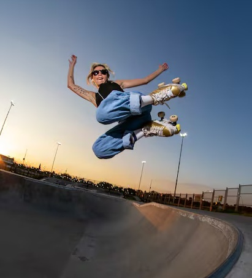
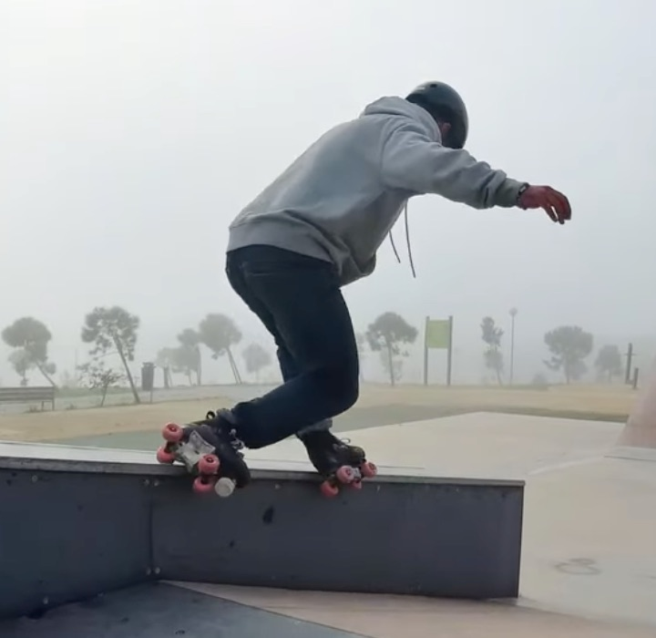
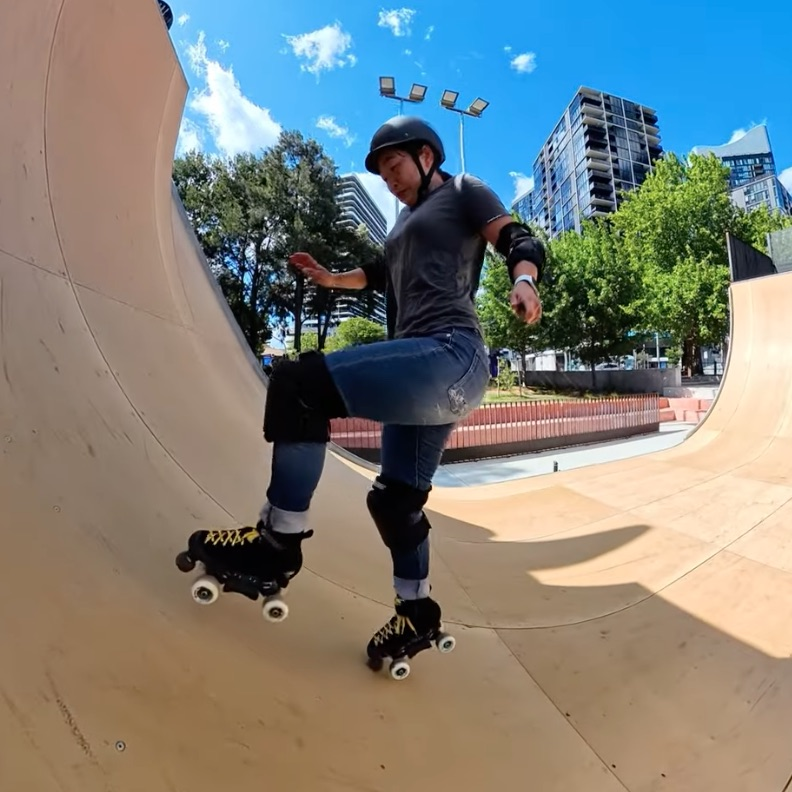
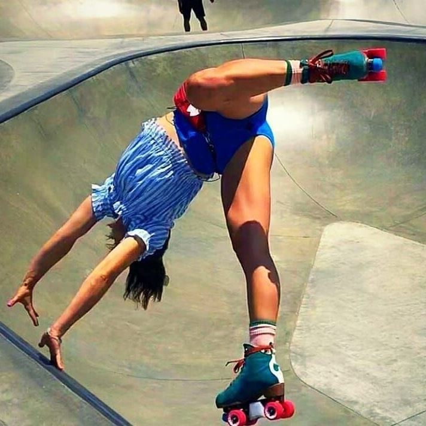
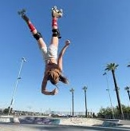

Estro Kick
A dynamic ramp trick requiring timing, control, and full commitment on coping.
A dynamic ramp trick requiring timing, control, and full commitment on coping.

A controlled air above the coping where the skater leaves the ramp, clears the edge, and re-enters with speed and balance. One of the first true “air” tricks in skatepark progression.

Stylish and technical — requires strong edge control and balance.

A commitment-heavy variation of the frontside stall with rotation and control.

A high-commitment aerial trick involving a dynamic jumping motion combined with a stylized body rotation. The Banana Flip requires strong timing, control in the air, and confident landings, making it a standout advanced trick in skatepark skating.

A high-level aerial trick combining a front flip motion with a half twist, requiring strong air awareness, precise timing, and confident rotation control. The Barani is a milestone trick for advanced skatepark skaters.